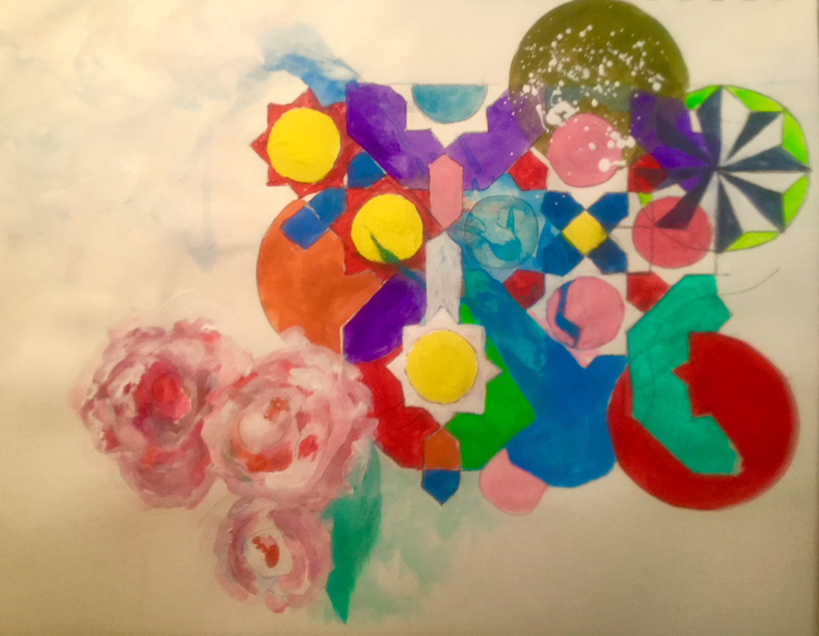

Charles Tarlton
Northampton, Massachusetts, USA
Was It Always Roses?

Guido Grandi publico en 1728, en Florencia, una obra (“Flores geometrici ex rhodonearum et claeliarum descriptione resultants”) en la cual trató de definir geométricamente las curvas que tienen la forma de rosas de muchos petalos (y llamo rodoneas las planas y clelias las esféricas).
– Italo d’Ignazio, Las Rodeneas
From the little central painted yellow square a universe explodes from its own singularity, blue pentagons and then red pentagons fly away in an expanding Queen’s quadrille that begins then at the edges to break down, to also fly apart. Colors lose their regimen and seem outlandish dress from there out to the edge where eight-toothed yellow-centered wildly turning gears grind it all—to roses. Imagine now a mechanical Black Forest cuckoo clock, carved and fit and glued, become a living rooster crowing on the hour in a universe that can contain both heliotropism as the sunflower seeks the sun, and the Fibonacci sequence in the arrangement of its seeds.
now start with flowers
how these organic petals
grow out of crystals
perhaps the geometry
is a floral translation
how many facets
has a blooming rose
where are the vectors
of its form, the places where
you lay the straightedge, draw lines?
beauty arising
out of Euclid. All these flowers
illustrating laws
out of sine, cosine, tangent
functions making everything whole
Author’s Note: Ann Knickerbocker, Was it Always Roses? Watercolor, Inktense Block, and pencil on paper, 11 x 14 inches. 2018. |